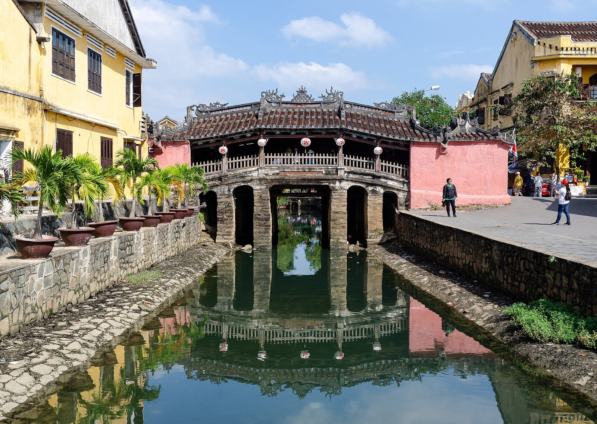

Tiếng Việt
Tiếng Việt English
English 한국어
한국어 中文
中文 Русский
Русский Deutsch
Deutsch
Ba ngày hai đêm là khoảng thời gian vừa đủ để Hội An không còn là một tấm ảnh check-in, mà trở thành một trải nghiệm có nhịp điệu riêng: sáng đạp xe qua cánh đồng, trưa ngủ một giấc bên hồ bơi, chiều lang thang phố cổ và tối ngồi bên sông Hoài nhìn đèn lồng thắp sáng. Bài viết này là lịch trình mà đội ngũ lễ tân CGP Luxury Hotel thường gợi ý cho khách lần đầu đến Hội An, được sắp xếp theo từng buổi để bạn đi thong thả mà vẫn không bỏ lỡ điều gì quan trọng.
Chuẩn bị trước chuyến đi
Trước khi bắt đầu, hãy nắm vài thông tin cơ bản để lịch trình chạy trơn tru. CGP Luxury Hotel nằm tại 67 Lý Thường Kiệt, cách khu phố cổ khoảng 1 km và cách bãi biển An Bàng khoảng 3 km. Khoảng cách này rất lý tưởng: đủ gần để đi bộ hoặc đạp xe vào phố, đủ xa để buổi tối bạn được ngủ trong yên tĩnh, không bị tiếng nhạc và dòng người của khu trung tâm làm phiền.
Địa chỉ67 Lý Thường Kiệt, Hội An
Nhận / trả phòngTừ 14:00 / trước 12:00
Đến phố cổKhoảng 1 km, 5 phút đạp xe
Đến biển An BàngKhoảng 3 km
Từ sân bay Đà NẵngKhoảng 45 phút đi ô tô. Khách sạn có dịch vụ đưa đón sân bay (có phí), vui lòng đặt trước với lễ tân.
Nếu chuyến bay của bạn hạ cánh vào buổi sáng, hãy báo trước để lễ tân sắp xếp gửi hành lý và, nếu còn phòng trống, hỗ trợ nhận phòng sớm. Trong lúc chờ, bạn có thể ngồi ở sảnh với ly nước ép mát hoặc ra khu cà phê sân vườn cạnh hồ bơi. Hành lý được giữ an toàn, còn bạn thì có thể bắt đầu khám phá ngay.
Nên mang theo gì?Giày đi bộ êm chân, mũ rộng vành, kem chống nắng, một chiếc áo khoác mỏng cho buổi tối và áo mưa gấp gọn nếu bạn đi vào khoảng tháng 9 đến tháng 12. Đồ bơi là bắt buộc, vì hồ bơi của khách sạn miễn phí cho mọi khách lưu trú.
Ngày 1: Nhận phòng và phố cổ về đêm

- 14:00
Nhận phòng và làm quen với khách sạn
Sau khi nhận phòng, hãy dành chút thời gian mở cửa ban công, pha một ấm trà và để cơ thể chậm lại sau chuyến đi. Phòng tại CGP có diện tích từ 35 đến 40 m², nhiều phòng có ban công nhìn ra phố Hội An hoặc cánh đồng xanh. Nếu bạn ở King Suite Pool Access tầng trệt, chỉ cần mở cửa kính là bước ra hiên gỗ cạnh hồ bơi.
- 15:30
Bơi một vòng và ăn nhẹ ở cà phê sân vườn
Nắng Hội An buổi chiều thường còn gắt, nên đây là lúc đẹp nhất để xuống hồ bơi. Sau đó, ghé khu cà phê dưới giàn cây xanh, gọi một ly nước ép dưa hấu hoặc trà trái cây và hỏi lễ tân về bản đồ đường đi trong phố. Họ sẽ đánh dấu giúp bạn những con đường ít đông đúc và vài quán ăn địa phương đáng thử.
- 17:00
Đạp xe vào phố cổ lúc hoàng hôn
Khoảng năm giờ chiều, nắng dịu xuống và những bức tường vàng của phố cổ bắt đầu chuyển sang màu mật ong. Mượn xe đạp giỏ mây tại khách sạn, đạp chừng năm phút là đến khu trung tâm. Gửi xe ở bãi gần phố, rồi bắt đầu đi bộ qua đường Trần Phú, Nguyễn Thái Học và Bạch Đằng. Chùa Cầu, Hội quán Phúc Kiến và các nhà cổ là những điểm nên ghé nếu bạn mua vé tham quan khu phố cổ.
- 19:00
Bữa tối với cao lầu và cơm gà
Đêm đầu tiên nên dành cho hai món làm nên tên tuổi Hội An. Cao lầu với sợi mì dai, vàng nâu, ăn cùng thịt xíu, rau sống Trà Quế và tóp mỡ giòn. Cơm gà với hạt cơm vàng óng nấu bằng nước luộc gà, ăn kèm gà xé, rau răm và đồ chua. Một bữa tối như vậy vừa no, vừa cho bạn cảm giác thực sự đã đến Hội An.
- 20:30
Thả đèn hoa đăng trên sông Hoài
Sau bữa tối, hãy ra bờ sông Hoài. Hai bên sông là hàng trăm chiếc đèn lồng nhiều màu, mặt nước lấp lánh ánh đèn. Bạn có thể ngồi thuyền một vòng ngắn và thả một chiếc đèn hoa đăng gửi lời ước. Nếu đi vào đêm rằm âm lịch, phố cổ còn đặc biệt hơn với không khí lễ hội. Khi đã thấm mệt, bạn chỉ cần đạp xe vài phút là về đến khách sạn, nơi khu phố yên tĩnh đang chờ.

Ảnh: Steffen Schmitz / Wikimedia Commons, CC BY-SA 4.0 Ảnh: Christophe95 / Wikimedia Commons, CC BY-SA 4.0
Ảnh: Christophe95 / Wikimedia Commons, CC BY-SA 4.0Lưu ý về xe cộ trong phố cổKhu phố cổ hạn chế xe máy và ô tô vào nhiều khung giờ, nhất là buổi tối. Đi bộ hoặc đạp xe là cách thuận tiện nhất. Hãy giữ vé tham quan trong người, vì một số điểm sẽ kiểm tra vé khi vào cửa.
Ngày 2: Đồng quê, rừng dừa và biển
Ngày thứ hai là ngày bạn rời khỏi khu phố cổ để thấy một Hội An khác: xanh hơn, mộc mạc hơn và gần gũi hơn với đời sống của người dân địa phương.
- 07:00
Bữa sáng nổi bên hồ bơi
Nếu bạn đã đặt trước từ hôm qua, khay mây với bánh ngọt, trái cây và nước ép sẽ được thả ngay trên mặt hồ. Đây là trải nghiệm mà nhiều cặp đôi xem là kỷ niệm đẹp nhất của chuyến đi. Nếu thích không khí quen thuộc hơn, bạn có thể dùng buffet sáng tại nhà hàng của khách sạn với bánh mì nướng, trứng, trái cây theo mùa, cà phê và trà.
- 08:00
Đạp xe qua làng rau Trà Quế
Từ khách sạn, đạp theo hướng biển An Bàng, bạn sẽ đi qua những cánh đồng lúa và đến làng rau Trà Quế. Những luống húng, quế, rau răm được bón bằng rong rêu từ đầm, vì vậy rau có mùi thơm rất riêng. Nhiều hộ dân cho khách thử làm nông một buổi: cuốc đất, tưới rau bằng gáo đôi và nấu một bữa ăn đơn giản từ chính luống rau vừa hái.
- 10:30
Biển An Bàng
Đi thêm một đoạn là đến biển An Bàng, cách khách sạn khoảng 3 km. Bãi biển còn giữ được vẻ hoang sơ, cát mịn và nhiều quán nhỏ ven biển. Thuê một chiếc ghế dưới tán dù, gọi một trái dừa tươi và ngắm sóng. Nếu thời tiết đẹp, bạn có thể tắm biển trước khi nắng lên cao.
- 12:30
Về khách sạn nghỉ trưa
Buổi trưa là lúc nên tránh nắng. Quay về khách sạn, tắm mát, gọi một phần cơm gà hoặc bánh mì ốp la từ bếp CGP và ngủ một giấc. Đây là khoảng nghỉ giúp bạn còn đủ năng lượng cho buổi chiều và buổi tối.
- 15:00
Rừng dừa Bảy Mẫu, Cẩm Thanh
Rừng dừa nước Bảy Mẫu nằm ở xã Cẩm Thanh, cách trung tâm Hội An chừng 5 đến 6 km. Ngồi thuyền thúng len lỏi giữa những rặng dừa nước, xem người lái thuyền biểu diễn xoay thúng và nghe họ kể chuyện làng chài là trải nghiệm rất vui, nhất là khi đi cùng bạn bè hoặc gia đình. Lễ tân có thể giúp bạn gọi xe hoặc gợi ý đơn vị tổ chức uy tín.
- 18:30
Chợ đêm và hải sản
Buổi tối, hãy thử chợ đêm Nguyễn Hoàng bên kia sông, nơi bán đủ thứ từ đèn lồng, quần áo đến đồ ăn vặt. Nếu thích hải sản, các quán dọc đường ra biển hoặc khu Cửa Đại có giá hợp lý. Đừng quên thử món bánh xèo, ram cuốn cải và chè bắp Cẩm Nam ngọt mát.

 Ảnh: Christophe95 / Wikimedia Commons, CC BY-SA 4.0
Ảnh: Christophe95 / Wikimedia Commons, CC BY-SA 4.0 Ảnh: Mig Gilbert from Brighton / Wikimedia Commons, CC BY-SA 2.0
Ảnh: Mig Gilbert from Brighton / Wikimedia Commons, CC BY-SA 2.0 Ảnh: Chester Ho chesterho / Wikimedia Commons, CC0
Ảnh: Chester Ho chesterho / Wikimedia Commons, CC0Ngày 3: Bữa sáng chậm và quà mang về
Ngày cuối cùng không cần vội. Giờ trả phòng là trước 12:00, nên bạn vẫn còn trọn một buổi sáng để tận hưởng.
- 07:30
Cà phê trên ban công
Pha một ly cà phê phin, mở cửa ban công và nhìn ánh nắng sớm trải trên cánh đồng hoặc mái ngói phố thị. Đây là khoảnh khắc mà nhiều khách nói rằng họ nhớ nhất khi rời Hội An.
- 08:30
Chợ Hội An và tiệm may
Chợ Hội An bên bờ sông là nơi tốt để mua đặc sản như trà, cà phê, mứt gừng hay các loại gia vị. Nếu bạn đã đặt may áo dài hoặc vest từ ngày đầu tiên, đây là lúc quay lại thử đồ lần cuối. Các tiệm may ở Hội An thường hoàn thành trong vòng 24 đến 48 giờ.
- 10:30
Lần bơi cuối và trả phòng
Quay về khách sạn, bơi một vòng cuối, sắp xếp hành lý và trả phòng. Nếu chuyến bay vào buổi chiều, lễ tân có thể giữ hành lý giúp bạn. Trả phòng trễ có thể được hỗ trợ tùy tình trạng phòng trống, vì vậy hãy hỏi trước một ngày.
- 13:00
Ra sân bay
Xe đưa đón của khách sạn sẽ đưa bạn ra sân bay Đà Nẵng trong khoảng 45 phút. Hãy đặt xe từ hôm trước để chủ động thời gian, nhất là vào mùa cao điểm.
 Ảnh: Chainwit. / Wikimedia Commons, CC BY 4.0
Ảnh: Chainwit. / Wikimedia Commons, CC BY 4.0Hội An đẹp nhất khi bạn đi chậm. Đừng cố ghé hết mọi nơi, hãy để dành vài lý do để quay lại.Lễ tân CGP Luxury Hotel
Gợi ý chi tiêu và di chuyển
Chi phí cho một chuyến đi 3 ngày 2 đêm phụ thuộc nhiều vào thói quen ăn uống và mua sắm của bạn. Bảng dưới đây là các khoản thường gặp để bạn tự lên ngân sách.
| Khoản mục | Gợi ý | Ghi chú |
|---|---|---|
| Lưu trú | 2 đêm tại CGP Luxury Hotel | Giá tùy hạng phòng và thời điểm, xem trên trang đặt phòng |
| Đưa đón sân bay | Xe riêng của khách sạn | Có phí, đặt trước với lễ tân |
| Di chuyển trong phố | Xe đạp, đi bộ | Hỏi lễ tân để mượn xe đạp |
| Vé tham quan phố cổ | Mua tại các quầy vé | Giá vé có thể thay đổi theo từng năm |
| Ăn uống | Quán địa phương và nhà hàng | Món đường phố Hội An có giá rất dễ chịu |
| Trải nghiệm | Thuyền thúng, thả đèn hoa đăng | Nên hỏi giá trước khi lên thuyền |
Nếu muốn mọi thứ trọn gói hơn, bạn có thể tham khảo các gói lưu trú của khách sạn. Ví dụ, gói Kỳ nghỉ thư giãn Hội An 3 đêm phù hợp với lịch trình trên nếu bạn muốn ở thêm một đêm để đi chậm hơn.
Những lưu ý nhỏ nhưng quan trọng
Tránh nắng giữa trưa
Từ 11 giờ đến 15 giờ là lúc nắng gắt nhất. Hãy nghỉ ngơi ở khách sạn và ra ngoài vào sáng sớm hoặc chiều muộn.
Theo dõi thời tiết mùa mưa
Từ tháng 10 đến tháng 11, phố cổ có thể bị ngập vài ngày. Lễ tân sẽ cập nhật tình hình và gợi ý lịch trình thay thế.
Mang theo tiền mặt
Nhiều quán nhỏ và người bán hàng rong chỉ nhận tiền mặt. Khi đặt phòng trên website, bạn có thể thanh toán bằng thẻ hoặc mã QR.
Chụp ảnh lịch sự
Hãy xin phép trước khi chụp ảnh người dân, nhất là các cụ già và người bán hàng ở chợ.
Câu hỏi thường gặp
3 ngày 2 đêm có đủ để khám phá Hội An không?
Đủ cho lần đầu, nếu bạn tập trung vào phố cổ, làng quê và biển. Nếu muốn đi thêm Cù Lao Chàm hoặc thánh địa Mỹ Sơn, bạn nên ở 3 đến 4 đêm.
Ở CGP Luxury Hotel có tiện đi phố cổ không?
Rất tiện. Khách sạn cách phố cổ khoảng 1 km, đạp xe chừng 5 phút hoặc đi bộ khoảng 15 phút.
Bữa sáng nổi có cần đặt trước không?
Có. Vui lòng báo lễ tân trước ít nhất một ngày để bếp chuẩn bị chu đáo.
Tôi có thể nhờ khách sạn đặt tour không?
Lễ tân phục vụ 24/24 và có thể hỗ trợ thu xếp tour, đặt vé, gọi xe và giới thiệu các dịch vụ phù hợp với lịch trình của bạn.
Sẵn sàng cho chuyến đi Hội An?
Chọn ngày, chọn phòng và để đội ngũ CGP Luxury Hotel chuẩn bị mọi thứ còn lại cho 3 ngày 2 đêm thật trọn vẹn của bạn.